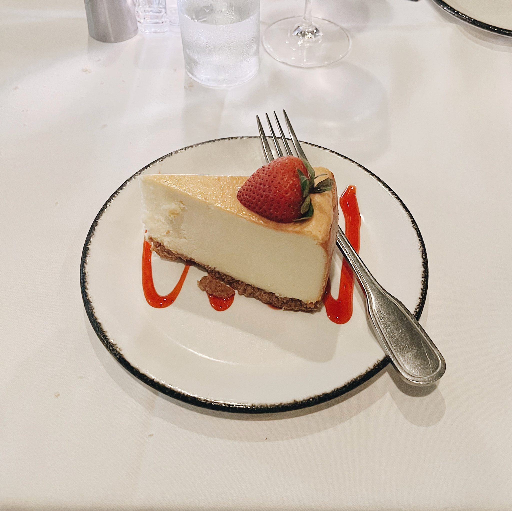
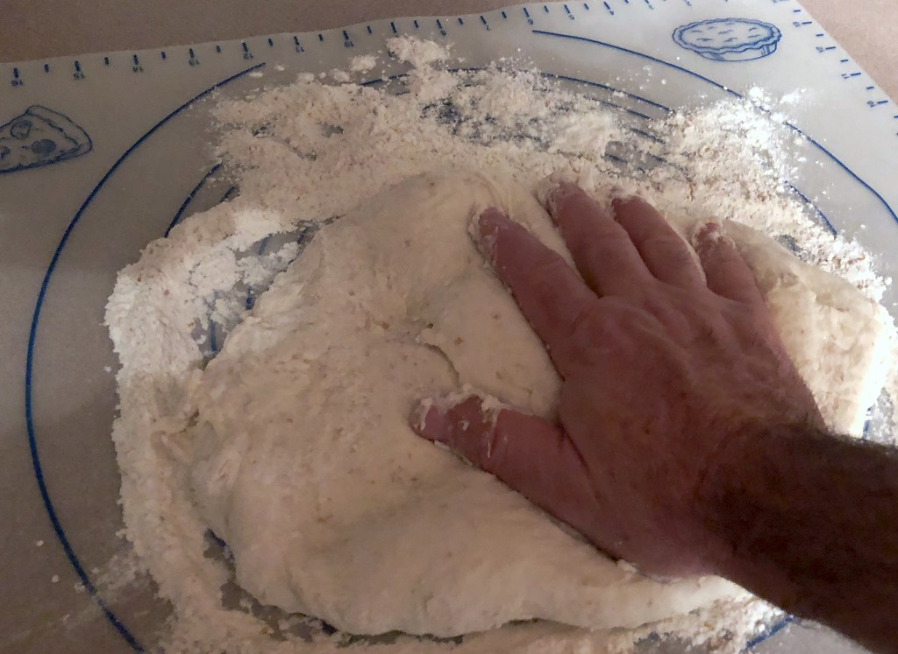
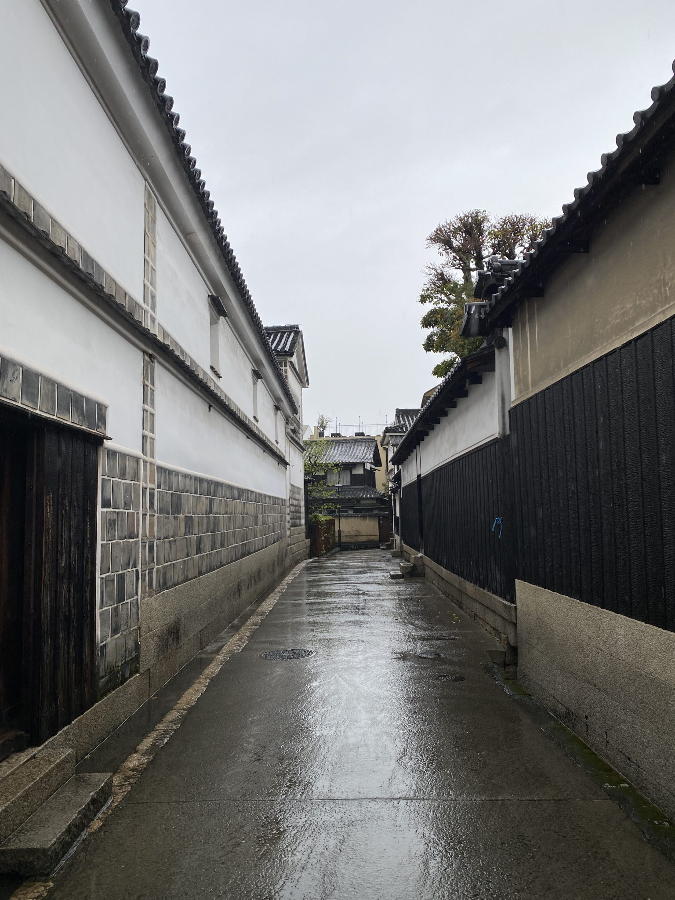

なめらかの向こう側、
バスクチーズケーキ
するりと喉を通る、絹ごしのようになめらかな口どけ。濃厚になりすぎない、爽やかな甘さに仕上げています。
焼き色のついた部分までやわらかく、甘さを抑えることでクリームチーズ本来の美味しさが引き立つ味づくり。ALLEY BIRTHDAYの看板として、多くのお客さまに選ばれている一品です。
¥530
ALLEY BIRTHDAY — 序章
ALLEY BIRTHDAY(アレイ・バースデー)｜新潟市東区秋葉通のケーキ・マフィン専門店
新潟市東区秋葉通、住宅地の奥にひっそり佇む、
ケーキとマフィンの店
表紙に描かれた小さなロゴは、この店の店主が自らデザインしたもの。絵本作家を目指していた手から生まれた、ALLEY BIRTHDAYの目印です。
※店内が大変狭いため、事前のお電話・Instagramでのご確認がおすすめです。
第一章
ALLEY BIRTHDAYを切り盛りするのは、女性店主がただ一人。接客も、焼き菓子づくりも、すべて一人でこなしています。
もともと絵本作家を目指していたという店主。店の顔となるロゴも、自らペンを取って描き上げました。棚に並ぶ焼き菓子のパッケージにも、その手描きの雰囲気がそっと息づいています。
お店に入ると、まず出迎えてくれるのはずらりと並んだマフィンたち。店主はその一つひとつについて、丁寧に説明をしてくれます。どれにしようか迷う時間も、この店ならではの楽しみです。
頭上の小さな窓の向こうには、キッチンで手を動かす店主の姿。販売をしながらの製造で忙しい時間も、来てくれたお客さま一人ひとりへの言葉を惜しみません。

第二章

するりと喉を通る、絹ごしのようになめらかな口どけ。濃厚になりすぎない、爽やかな甘さに仕上げています。
焼き色のついた部分までやわらかく、甘さを抑えることでクリームチーズ本来の美味しさが引き立つ味づくり。ALLEY BIRTHDAYの看板として、多くのお客さまに選ばれている一品です。
¥530
お店に入ると、まず目に飛び込んでくるのは、棚にずらりと並んだマフィンたち。
種類が豊富で、どれにしようか迷ってしまうほど。店主が一種類ずつ丁寧に説明してくれるので、初めての方でも安心して選べます。しっとりとした生地の食感も好評です。
価格は店頭にてご確認ください
第三章
バスクチーズケーキとマフィンのほかにも、棚にはさまざまな焼き菓子が並びます。

上記以外にも、季節の焼き菓子が並ぶことがあります。最新の商品はInstagramをご確認ください。
第四章
濃厚すぎず、食べやすい爽やかな甘さでした。
スルスルッと喉を通る絹ごしのような滑らかさ。甘さが抑えてあって、クリームチーズ本来の美味しさを堪能できました。
マフィンはしっとりしていて、本当に美味しかったです。
値段は高めですが、食べる価値があります。
第五章
ALLEY BIRTHDAYは、ウエルシア薬局秋葉通の裏側、住宅地の細い路地の突き当りにあります。少しわかりにくい場所ですが、この道しるべの通りに進んでいただければ大丈夫です。
「ウエルシア薬局 秋葉通」または「セブンイレブン」を目印にお進みください。
店舗前の駐車スペースは大変狭いため、お車でお越しの際はウエルシア薬局・セブンイレブンの共用駐車場をご利用いただくよう店舗よりご案内しております。
駐車場から住宅地の細い路地を奥へ、徒歩で1分ほど歩いていただきます。
突き当りまで進むと、手描きの絵本ロゴが目印のお店が見えてきます。

駐車についてのご案内
店舗前の駐車スペースは1〜3台分と大変狭く、道幅も限られています。車種によっては切り返しが難しいため、普通車以上のサイズでお越しの際は、ウエルシア薬局・セブンイレブンの共用駐車場のご利用をおすすめしています。軽自動車でお越しの場合も、住宅地の道となりますので、徐行と近隣へのご配慮をお願いいたします。
所在地:新潟県新潟市東区秋葉通(詳細な住所は店頭・Googleマップにてご確認ください)
終章
店内はとても小さく、2組程度でいっぱいになってしまいます。事前にお電話いただけますとスムーズです。
営業時間
営業時間は店頭・Instagramにてご確認ください
定休日
定休日は店頭・Instagramにてご確認ください
掲載している一部の写真はフリー素材によるイメージ写真です。実店舗の外観・内観・商品とは異なる場合があります。